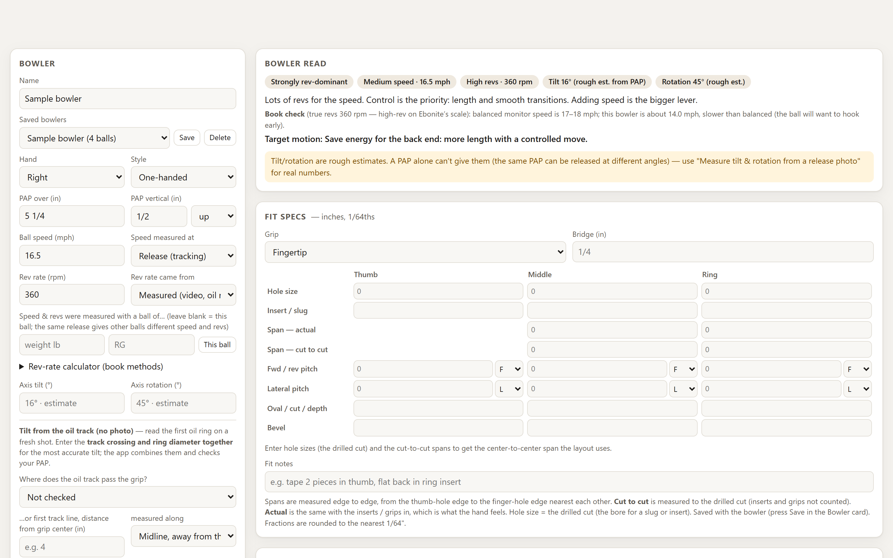
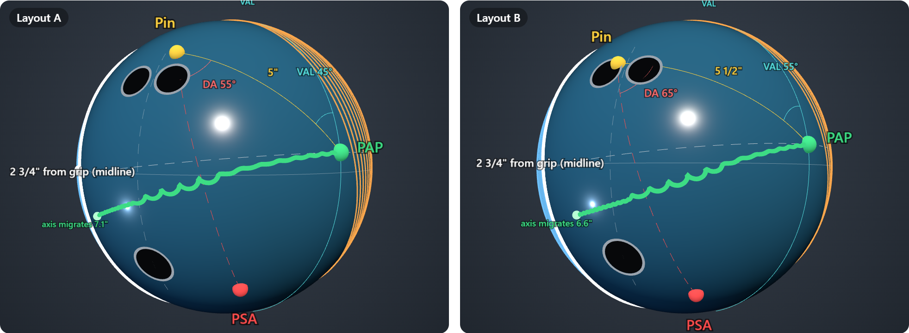
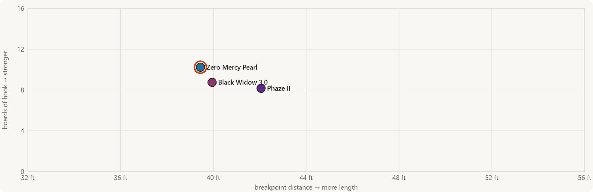
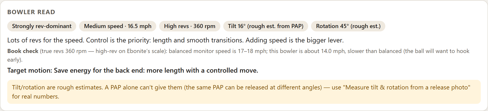
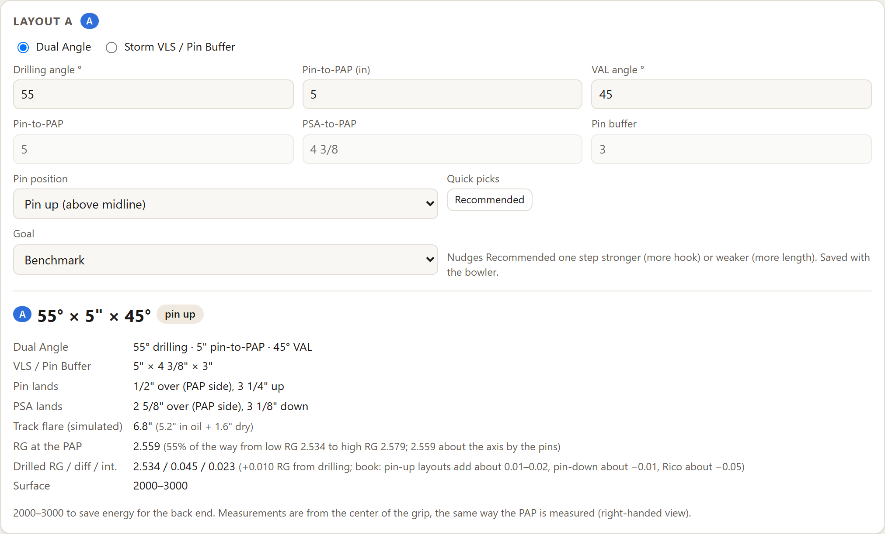

Layout recommendations in both systems
Get the drilling angle, pin-to-PAP and VAL angle from the bowler’s speed, revs, tilt and pattern, plus where the pin and PSA land.
Enter your PAP, speed, rev rate and axis tilt. X-ING picks a Dual Angle or VLS layout, explains why, and rolls the drilled ball down your oil pattern.
Enter the bowler’s numbers on the left, and the read, fit specs, layout and ball motion update on the right as you type. Everything saves to the bowler’s profile.
Open the app
Get the drilling angle, pin-to-PAP and VAL angle from the bowler’s speed, revs, tilt and pattern, plus where the pin and PSA land.
Watch the ball roll down a real house or PBA pattern, from behind the bowler or following the ball. Pro
Try a stronger or weaker layout B on the same ball or a different one. Pro

See each ball’s length and hook on this pattern, and let the gap point to your next ball. Pro

Print the bowler’s type, speed and revs alongside the layout and fit. Pro

How it picks
A layout chart gives every bowler the same answer. X-ING starts from the bowler’s PAP, speed and revs, then rolls the drilled ball down your pattern before anyone picks up a drill.
Advanced mode shows each layout in Dual Angle and VLS with the drilled RG and differential, beside the bowler’s fit table.
Hole sizes, spans and pitches in 1/64ths
Every ball you’ve drilled, saved with the bowler
Drill sheets and spec sheets with your shop’s name and logo
A customer list with phone, email and notes

Free never expires: one bowler, up to 9 balls in the arsenal, and every ball in the database to try. Pro and Shop prices arrive with online checkout.
For any bowler
One bowler, up to 9 balls in the arsenal
Every ball in the database
Layout recommendations
The 3D drilled ball
Top-down lane and ball motion
Import your saved data
For bowlers. Everything in Free, plus
Up to 5 bowlers, unlimited arsenals
Advanced mode: ball specs, track and rev measuring, your own line
Auto line and strike chance
The 3D lane
Compare A and B
Arsenal coverage chart
Printed drill and spec sheets, data export
Shot log and lane calibration
Everything in Pro, plus
Unlimited bowlers
Customer list
Your shop’s name and logo on printed sheets
| Feature | Free$0 | ProFor bowlers | ShopPro shops |
|---|---|---|---|
| Every plan | |||
| Bowlers | 1 | Up to 5 | Unlimited |
| Balls in each arsenalBalls saved and drilled for a bowler | 9 | Unlimited | Unlimited |
| Every ball in the database567 US balls to pick and try | Included | Included | Included |
| Layout recommendationsDual Angle or VLS, with the reasons | Included | Included | Included |
| PAP and ball motion | Included | Included | Included |
| 3D drilled ballHoles, pin, PSA and flare rings | Included | Included | Included |
| Top-down lane | Included | Included | Included |
| Arsenal list | Included | Included | Included |
| Import your saved data | Included | Included | Included |
| Pro tools | |||
| Advanced modeBall specs, track and rev measuring, your own line | Not included | Included | Included |
| Auto line and strike chanceBest strike line for the pattern | Not included | Included | Included |
| 3D lane view | Not included | Included | Included |
| Compare A and BTwo balls or layouts side by side | Not included | Included | Included |
| Arsenal coverage chart | Not included | Included | Included |
| Printed sheetsDrill sheet, spec sheet, fit card | Not included | Included | Included |
| Export your dataJSON backup | Not included | Included | Included |
| Shot log and lane calibration | Not included | Included | Included |
| Shop tools | |||
| Customer listPhone, email and notes for every bowler | Not included | Not included | Included |
| Shop brandingYour name, contact details and logo on printed sheets | Not included | Not included | Included |
Pro and Shop will offer monthly or yearly billing with a 14-day free trial when online checkout opens.
With Pro, tap the pins left standing and enter where the ball broke. Each shot retunes the lane, so the next prediction matches what this bowler’s ball actually did.
Tracks strikes and leaves by pattern
Compares each shot with the app’s prediction
Flags a bad release so it never skews the lane
Yes, with no time limit and no card. Free covers one bowler with up to 9 balls in the arsenal, and you can try every ball in the database. You need an account so your bowler and balls are saved.
567 US releases: current balls and those discontinued in the last five years, with specs for each weight.
No. It runs in the browser on a computer, tablet or phone, and keeps a copy on your device so it works offline.
It’s a physics simulation built for comparing layouts, not a guarantee. Log real shots and it tunes the lane to what your ball actually did. Always confirm on the lanes.
Yes. Set each bowler’s hand and style, and the layout and lane follow.
Once online checkout opens. Until then, email us and we’ll upgrade your account by hand.